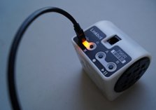
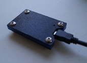
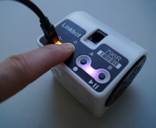
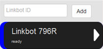
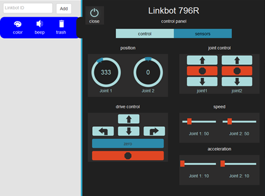
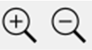

Plugin the Linkbot or Z-Link dongle.
 Turn on the linkbot by pressing and holding the power button for 3 seconds.
Open the Robot Manager along the left edge of the screen.
Enter the Linkbot ID into the Robot Manager and push "Add." This will add a Linkbot robot to the Robot Manager, shown below.
Open the Robot Control Panel by pressing the white expand arrow next to the Linkbot robot that was added.
From here you can read your Linkbot’s encoder data and drive its motors to specific positions (2), adjust its motor speeds (3), move its motors individually (4), and, if you’re using a Linkbot-I, move its motors coordinately in a car-like fashion (5). We’ll cover some of this in detail later.
Test out the motors by clicking on the arrow buttons (4 and 5). Try adjusting their speed while they’re moving (3). To stop them, press the stop button at the bottom.
To the right of the motor control column are a buzzer control bar and an accelerometer data display. Try beeping the buzzer at various frequencies. Shake your Linkbot and you should see the accelerometer sliders dance.
Notice that the robot control bar changes when its control panel is expanded: you can modify your Linkbot’s LED color with the color button and remove it from your robot manager with the trash button.
Important: The robot control panel generates a lot of radio traffic, especially if the Linkbot is being manipulated by hand. Linkbot users sharing the same room should minimize the amount of time they have their control panels expanded, especially if they notice connectivity problems.
If the control panel is too big or too small for your screen then you can zoom in or out using the buttons in the top right, as shown below.
To go back to the Main Page click the Linkbot Labs icon at the top left of the screen. Later Gator!